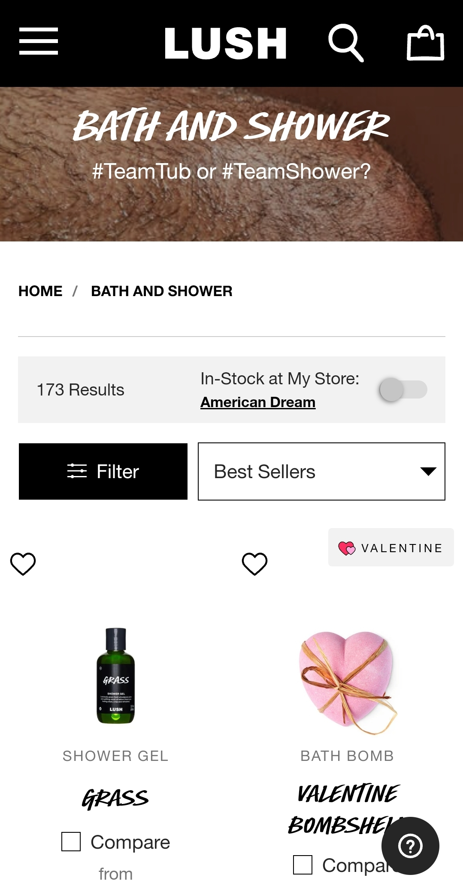

Whitespace
Lush

This website is a nice example of whitespace because it has a vibrant pop of color highlighting the vibrant products they offer in a white background while being contrasted with large black and white typography and a black header which pop to the eye while keeping it easily readable.